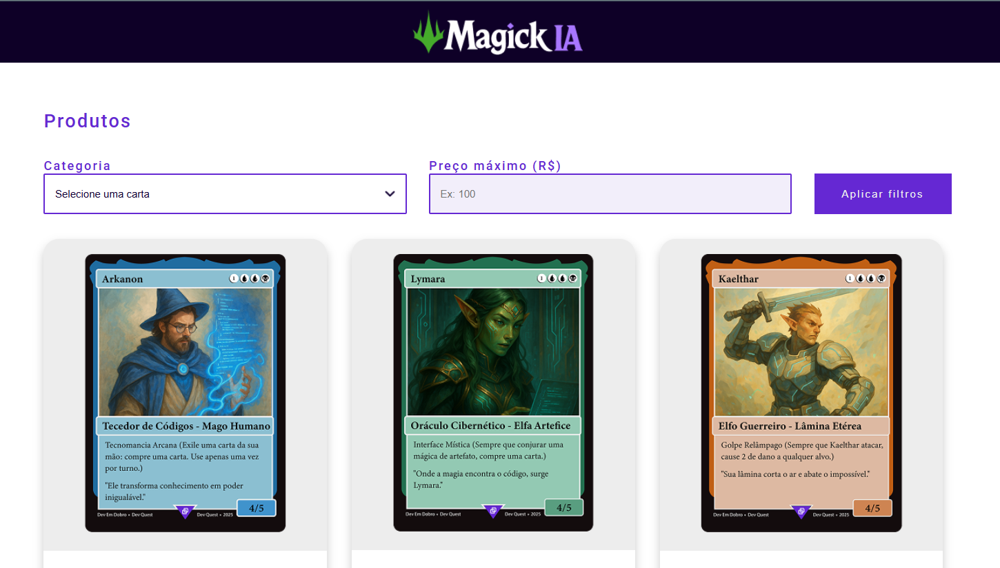
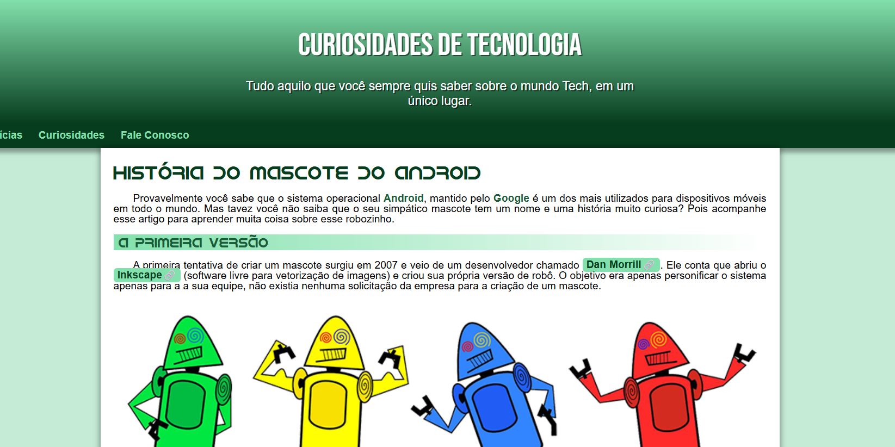
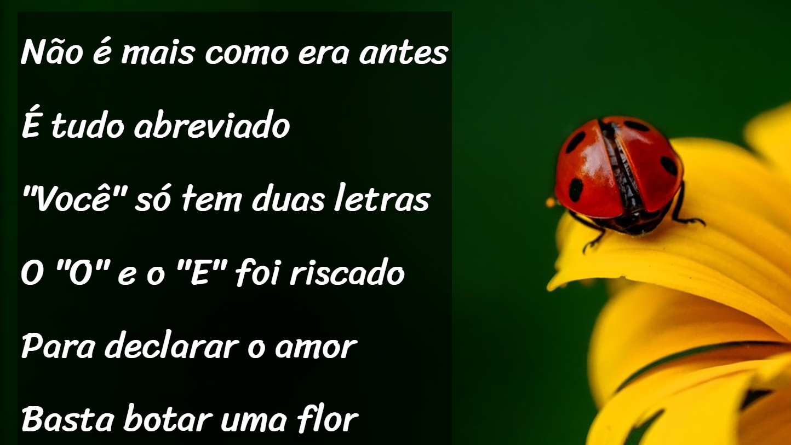
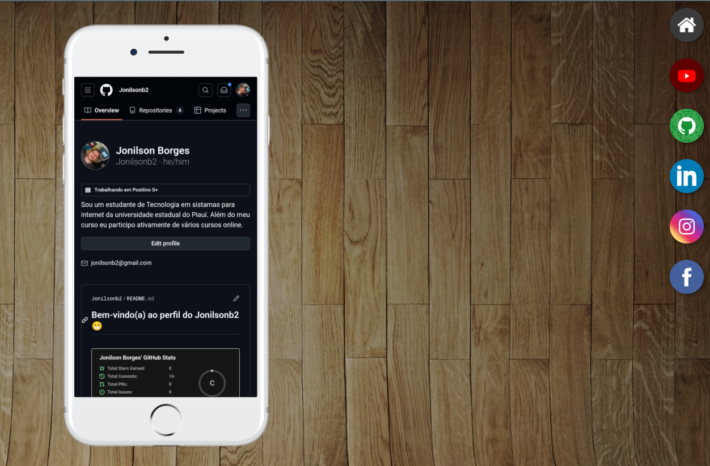

Jonilson Borges
Graduando em Tecnologia de Sistemas para Internet, com especialização em desenvolvimento web e linguagens de programação. Apaixonado por tecnologia, estou sempre em busca de novos desafios e aprendizado contínuo. Atualmente, atuo como Field Service, com foco na transição para a área de desenvolvimento web.
Minhas Skills
HTML5
75%
CSS3
75%
JavaScript
40%
Hardware
95%
Software
80%
Redes
60%
Comunicação
90%
Trabalho em equipe
99%
Adaptabilidade
100%
Liderança
80%
Formação Acadêmica
2013 - 2013
Senac
Relações Interpessoais no Trabalho
2014 - 2014
Senac
Produtor Gráfico
2015 - 2015
Social Informática
Informática Básica
2016 - 2016
Carlos Quiríno
Qualidade no Atendimento ao Cliente
2020 - 2020
Educompane
Montagem e Manutenção de Celulares, Tablets e Smatphones
2020 - 2020
HD Informática
Hardware Montagem e Manutenção de Microcomputadores
2020 - 2020
HD Informática
Conceitos Básicos de Redes de Computadores
2024 - 2027
UESPI/UAPI
Tecnologia em Sistemas para Internet
Meus Projetos

2025
Projeto MagickIA
Projeto criado para praticar uma plataforma de E-coomerce.
Saiba mais...
Esse foi um projeto criado na semana do programador contratado dos gemeos Kadu e Edu, com o intuíto de praticar uma plataforma de E-commerce de vendas de cartas geradas por IA.

2025
Projeto Adroid
Projeto criado para praticar sobre indexação de textos.
Saiba mais...
Esse foi um projeto criado no segundo modulo do curso de HTML5 e CSS3 do Gustavo Guanabara, como o inuito de trazer informação e praticar indexação de textos, imagens e videos.

2025
Projeto Cordel Moderno
Projeto criado para praticar o efeito paralax.
Saiba mais...
Esse foi um projeto criado no terceiro modulo do curso de HTML5 e CSS3 do Gustavo Guanabara, com o intuíto de praticar uma plataforma com efeitos visuais, mas especificamente o efeito paralax, onde a posição dos elementos muda conforme o movimento do mouse.

2025
Projeto Midias Sociais
Projeto criado para praticar uma plataforma de mídias sociais.
Saiba mais...
Esse foi um projeto criado no quarto modulo do curso de HTML5 e CSS3 do Gustavo Guanabara, com o intuíto de praticar uma plataforma de pré-visualização e encaminhamento para as páginas de mídias sociais.